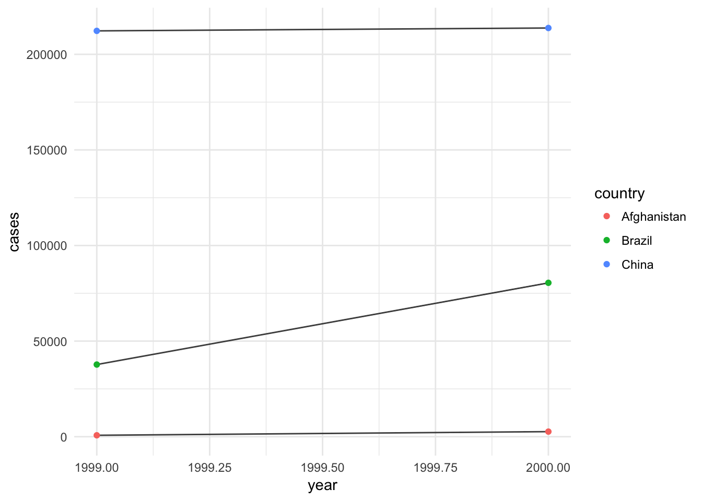
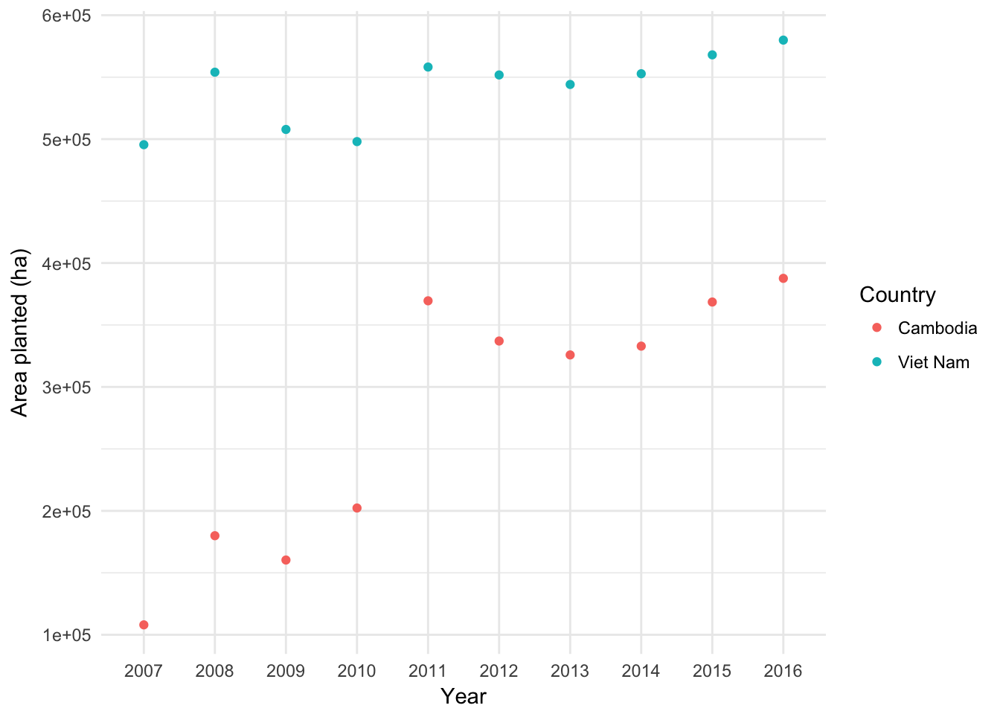

Maybe the most important step?
FAO1 <- read.csv("FAOSTAT_data.csv", header = TRUE)
library(tidyverse)
FAO1 <- read_csv("FAOSTAT_data.csv")## Parsed with column specification:
## cols(
## Country = col_character(),
## Element = col_character(),
## Item = col_character(),
## Year = col_integer(),
## Unit = col_character(),
## Value = col_integer()
## )FAO1## # A tibble: 40 x 6
## Country Element Item Year Unit Value
## <chr> <chr> <chr> <int> <chr> <int>
## 1 Cambodia Area harvested Bananas 2007 ha 30000
## 2 Cambodia Area harvested Bananas 2008 ha 32000
## 3 Cambodia Area harvested Bananas 2009 ha 33000
## 4 Cambodia Area harvested Bananas 2010 ha 35002
## 5 Cambodia Area harvested Bananas 2011 ha 32574
## 6 Cambodia Area harvested Bananas 2012 ha 31844
## 7 Cambodia Area harvested Bananas 2013 ha 31757
## 8 Cambodia Area harvested Bananas 2014 ha 31741
## 9 Cambodia Area harvested Bananas 2015 ha 31786
## 10 Cambodia Area harvested Bananas 2016 ha 31875
## # ... with 30 more rowsSay that after import, you notice that you would like to change one of your variable types, you can do that by specifying the variable type for each column. For example, let’s say we want to change year to character:
FAO2 <- read_csv("FAOSTAT_data.csv", col_types = cols(
Country = col_character(),
Element = col_character(),
Item = col_character(),
Year = col_character(), ### changed year to character
Unit = col_character(),
Value = col_integer()
))
FAO2## # A tibble: 40 x 6
## Country Element Item Year Unit Value
## <chr> <chr> <chr> <chr> <chr> <int>
## 1 Cambodia Area harvested Bananas 2007 ha 30000
## 2 Cambodia Area harvested Bananas 2008 ha 32000
## 3 Cambodia Area harvested Bananas 2009 ha 33000
## 4 Cambodia Area harvested Bananas 2010 ha 35002
## 5 Cambodia Area harvested Bananas 2011 ha 32574
## 6 Cambodia Area harvested Bananas 2012 ha 31844
## 7 Cambodia Area harvested Bananas 2013 ha 31757
## 8 Cambodia Area harvested Bananas 2014 ha 31741
## 9 Cambodia Area harvested Bananas 2015 ha 31786
## 10 Cambodia Area harvested Bananas 2016 ha 31875
## # ... with 30 more rowsFAOxls <- readxl::read_excel("FAOSTAT_data2.xlsx")
FAOxls## # A tibble: 40 x 6
## Country Element Item Year Unit Value
## <chr> <chr> <chr> <dbl> <chr> <dbl>
## 1 Cambodia Area harvested Bananas 2007. ha 30000.
## 2 Cambodia Area harvested Bananas 2008. ha 32000.
## 3 Cambodia Area harvested Bananas 2009. ha 33000.
## 4 Cambodia Area harvested Bananas 2010. ha 35002.
## 5 Cambodia Area harvested Bananas 2011. ha 32574.
## 6 Cambodia Area harvested Bananas 2012. ha 31844.
## 7 Cambodia Area harvested Bananas 2013. ha 31757.
## 8 Cambodia Area harvested Bananas 2014. ha 31741.
## 9 Cambodia Area harvested Bananas 2015. ha 31786.
## 10 Cambodia Area harvested Bananas 2016. ha 31875.
## # ... with 30 more rows????
????
table1## # A tibble: 6 x 4
## country year cases population
## <chr> <int> <int> <int>
## 1 Afghanistan 1999 745 19987071
## 2 Afghanistan 2000 2666 20595360
## 3 Brazil 1999 37737 172006362
## 4 Brazil 2000 80488 174504898
## 5 China 1999 212258 1272915272
## 6 China 2000 213766 1280428583table2## # A tibble: 12 x 4
## country year type count
## <chr> <int> <chr> <int>
## 1 Afghanistan 1999 cases 745
## 2 Afghanistan 1999 population 19987071
## 3 Afghanistan 2000 cases 2666
## 4 Afghanistan 2000 population 20595360
## 5 Brazil 1999 cases 37737
## 6 Brazil 1999 population 172006362
## 7 Brazil 2000 cases 80488
## 8 Brazil 2000 population 174504898
## 9 China 1999 cases 212258
## 10 China 1999 population 1272915272
## 11 China 2000 cases 213766
## 12 China 2000 population 1280428583table3## # A tibble: 6 x 3
## country year rate
## * <chr> <int> <chr>
## 1 Afghanistan 1999 745/19987071
## 2 Afghanistan 2000 2666/20595360
## 3 Brazil 1999 37737/172006362
## 4 Brazil 2000 80488/174504898
## 5 China 1999 212258/1272915272
## 6 China 2000 213766/1280428583table1## # A tibble: 6 x 4
## country year cases population
## <chr> <int> <int> <int>
## 1 Afghanistan 1999 745 19987071
## 2 Afghanistan 2000 2666 20595360
## 3 Brazil 1999 37737 172006362
## 4 Brazil 2000 80488 174504898
## 5 China 1999 212258 1272915272
## 6 China 2000 213766 1280428583library(ggplot2)
ggplot(table1, aes(year, cases)) +
geom_line(aes(group = country), color = "gray30") +
geom_point(aes(color = country)) +
theme_minimal()
FAO3 <- FAO2 %>% filter(Item == "Cassava")
library(ggplot2)
ggplot(FAO3, aes(Year, Value)) +
geom_point(aes(color = Country)) +
ylab("Area planted (ha)") +
theme_minimal()
table4a## # A tibble: 3 x 3
## country `1999` `2000`
## * <chr> <int> <int>
## 1 Afghanistan 745 2666
## 2 Brazil 37737 80488
## 3 China 212258 213766table4a_2 <- table4a %>% gather ("1999", "2000", key = "year", value= "cases")
table4a_2## # A tibble: 6 x 3
## country year cases
## <chr> <chr> <int>
## 1 Afghanistan 1999 745
## 2 Brazil 1999 37737
## 3 China 1999 212258
## 4 Afghanistan 2000 2666
## 5 Brazil 2000 80488
## 6 China 2000 213766spread
MessyFAO <- read_csv("FAOSTAT_data.csv")## Parsed with column specification:
## cols(
## Country = col_character(),
## Element = col_character(),
## Item = col_character(),
## Year = col_integer(),
## Unit = col_character(),
## Value = col_integer()
## )MessyFAO2 <- MessyFAO %>% unite(Area,Value,Unit, sep = "_")
MessyFAO2## # A tibble: 40 x 5
## Country Element Item Year Area
## <chr> <chr> <chr> <int> <chr>
## 1 Cambodia Area harvested Bananas 2007 30000_ha
## 2 Cambodia Area harvested Bananas 2008 32000_ha
## 3 Cambodia Area harvested Bananas 2009 33000_ha
## 4 Cambodia Area harvested Bananas 2010 35002_ha
## 5 Cambodia Area harvested Bananas 2011 32574_ha
## 6 Cambodia Area harvested Bananas 2012 31844_ha
## 7 Cambodia Area harvested Bananas 2013 31757_ha
## 8 Cambodia Area harvested Bananas 2014 31741_ha
## 9 Cambodia Area harvested Bananas 2015 31786_ha
## 10 Cambodia Area harvested Bananas 2016 31875_ha
## # ... with 30 more rowsMessyFAO3 <- MessyFAO2 %>% separate(Area, into = c("Value", "Unit"))
MessyFAO3## # A tibble: 40 x 6
## Country Element Item Year Value Unit
## <chr> <chr> <chr> <int> <chr> <chr>
## 1 Cambodia Area harvested Bananas 2007 30000 ha
## 2 Cambodia Area harvested Bananas 2008 32000 ha
## 3 Cambodia Area harvested Bananas 2009 33000 ha
## 4 Cambodia Area harvested Bananas 2010 35002 ha
## 5 Cambodia Area harvested Bananas 2011 32574 ha
## 6 Cambodia Area harvested Bananas 2012 31844 ha
## 7 Cambodia Area harvested Bananas 2013 31757 ha
## 8 Cambodia Area harvested Bananas 2014 31741 ha
## 9 Cambodia Area harvested Bananas 2015 31786 ha
## 10 Cambodia Area harvested Bananas 2016 31875 ha
## # ... with 30 more rows